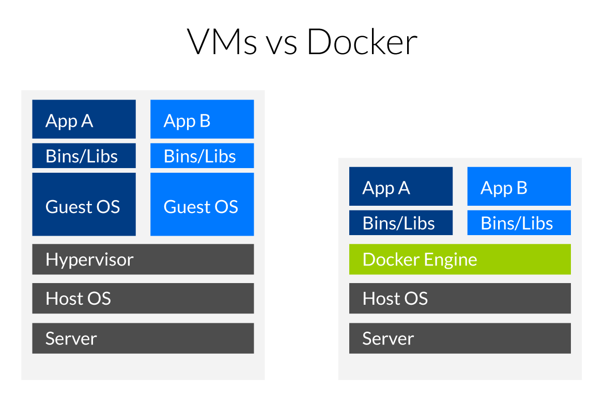

Installation of a Galaxy server with Docker
What is Docker ?

Virtual machines
Virtual machines (VMs) are an abstraction of physical hardware turning one server into many servers. The hypervisor allows multiple VMs to run on a single machine. Each VM includes a full copy of an operating system, one or more apps, necessary binaries and libraries - taking up tens of GBs. VMs can also be slow to boot.
Containers
Containers are an abstraction at the app layer that packages code and dependencies together. Multiple containers can run on the same machine and share the OS kernel with other containers, each running as isolated processes in user space. Containers take up less space than VMs (container images are typically tens of MBs in size), and start almost instantly.
GalaxyKickStart Docker Container
Instead of using the GalaxyKickStart playbook in a VM, the playbook can be used to build a Docker container image that will be an almost exact mirror of the GalaxyKickStart VM you have just built.
You are not going to do that today (although you should be able to do it by reading the instructions).
Instead, you are going to
- Install the
dockersystem - pull the GalaxyKickStart docker container that is deposited in the
Docker Hub - run this docker container and connect to the deployed GalaxyKickStart server instance
Deployment
- start a GCE VM
2 procs, 7.5Gb RAM, Ubuntu 14.04, 100 Go disk, http enabled - connect to you VM using the Google ssh console
- start an interactive session as root using the command
sudo -i - download the script
install_docker.shusing the commandwget https://raw.githubusercontent.com/ARTbio/Run-Galaxy/master/deployment_scripts/install_docker.sh - run the script using the command
sh install_docker.sh -
Connect to your ansible-deployed "GalaxyKickStart" instance:
Just click on the url displayed in your Google Cloud Engine Console.
The install_docker.sh script explained
NB: in the following code, numbers in line heads should be removed to run the script.
1 #!/usr/bin/env bash
2 set -e
3 apt-key adv --recv-keys --keyserver hkp://p80.pool.sks-keyservers.net:80 58118E89F3A912897C070ADBF76221572C52609D
4 add-apt-repository "deb https://apt.dockerproject.org/repo ubuntu-trusty main"
5 apt-get update -y
6 apt-get -y install docker-engine
7 echo "Docker system is installed\n"
8 echo "Now pulling the galaxykickstart docker image from DockerHub\n"
9 docker pull artbio/galaxykickstart
10 echo "Running galaxykickstart docker container\n"
11 export DOCKER_INSTANCE=`docker run -d -p 80:80 -p 21:21 -p 8800:8800 \
12 --privileged=true \
13 -e GALAXY_CONFIG_ALLOW_USER_DATASET_PURGE=True \
14 -e GALAXY_CONFIG_ALLOW_LIBRARY_PATH_PASTE=True \
15 -e GALAXY_CONFIG_ENABLE_USER_DELETION=True \
16 -e GALAXY_CONFIG_ENABLE_BETA_WORKFLOW_MODULES=True \
17 -v /tmp/:/tmp/ \
18 -v /export/:/export \
19 artbio/galaxykickstart`
20 echo "The galaxykickstart docker container is up and running\n"
21 echo "Please wait for a few secondes and interrupt logging when all services are launched\n"
22 echo "Ctrl-C to stop logging\n\n"
23 docker logs -f $DOCKER_INSTANCE
- The shebang line. Says that it is a script code and that the interpreter to execute the code is bash and can be found in the /usr/bin/env environment
- set -e says to the bash interpreter to exit the run at first error (to avoid catastrophes)
- installs an authentication key to interact with the repository
apt.dockerproject.orgthat will be declared in the next code line - Adds the repository
https://apt.dockerproject.org/repoto the system settings - Updates the system settings so that the added repo is registered for the apt-get program
- Installs the Docker system as depicted in the figure above !
- reports to the terminal user
- reports to the terminal user
- Pulls (Downloads) the Docker Image
artbio/galaxykickstartfrom the DockerHub repository - reports to the terminal user
-
Lines 11 to 19 are actually a single command to run an instance of the galaxykickstart docker image. Note the
\at ends of lines 11 to 18: this character\specify that the code line is continued without line break for the bash interpreter.The line 11 starts with an
export DOCKER_INSTANCE=instruction. This means that the result of the command between ` after the sign=will be put in the environmental variableDOCKER_INSTANCE, available system-wide.Now, the docker command (between `) itself:
Still in line 11, we have
docker run -d -p 80:80 -p 21:21 -p 8800:8800.This means that a container will be run as a deamon (
-doption) and that the internal TCP/IP ports 80 (web interface) and 21 (ftp interface) of the docker instance will be mapped to the ports 80 and 21 of your machin (The VM in this case). Note that in the syntax-p 80:80, the host port is specified to the left of the:and the docker port is specified to the right of the:. -
docker command continued: here we specify that the docker container acquires the root privileges
-
docker command continued:
-e GALAXY_CONFIG_ALLOW_USER_DATASET_PURGE=True.The -e option specifies an environmental variable
GALAXY_CONFIG_ALLOW_USER_DATASET_PURGEpassed (exported) to the docker container with the valueTruegalaxy_manage_trackster: truewith the stringgalaxy_manage_trackster: falsein the ansible configuration filegroups/all. -
The environmental variable
GALAXY_CONFIG_ALLOW_LIBRARY_PATH_PASTEis exported to the docker container with the valueTrue - The environmental variable
GALAXY_CONFIG_ENABLE_USER_DELETIONis exported to the docker container with the valueTrue -
The environmental variable
GALAXY_CONFIG_ENABLE_BETA_WORKFLOW_MODULESis exported to the docker container with the valueTrueNote that all these exports in the docker command correspond to advanced boiling/tuning of the docker container. You are not obliged to understand the details to get the container properly running. 17. Now the -v is important, better to understand it !
-v stands for "volume". the
-voption says to export the /tmp directory of the docker container to the /tmp directory of the host. 18. we also export the /export directory of the container (any docker container has or should have by default an /export directory) to an /export directory of the host (your VM here).Note that if the /export directory does not exists at docker run runtime, it will be created.
So it is important to understand the -v magics: every directory specified by the -v option will be shared between the docker container filesystem and the host filesystem. It is a mapping operation, so that the same directory is accessible either from inside the docker container or from inside the host.
Now, if you stop and remove the docker container, all exported directory will persist in the host. If you don't do that, all operations performed with a container are lost when you stop this container !
-
This is the end of the docker run command. The docker image to be instantiated is specified.
- reports to the terminal user
- reports to the terminal user
- reports to the terminal user
- Now that the docker container is launched, you can access its logs with the command
docker logs -f(-f means continuous logging until keyboard interruption) followed by the identification number of the docker container. We have put this ID in the variableDOCKER_INSTANCEand we access to the content of this variable by prefixing the variable with a$:docker logs -f $DOCKER_INSTANCE